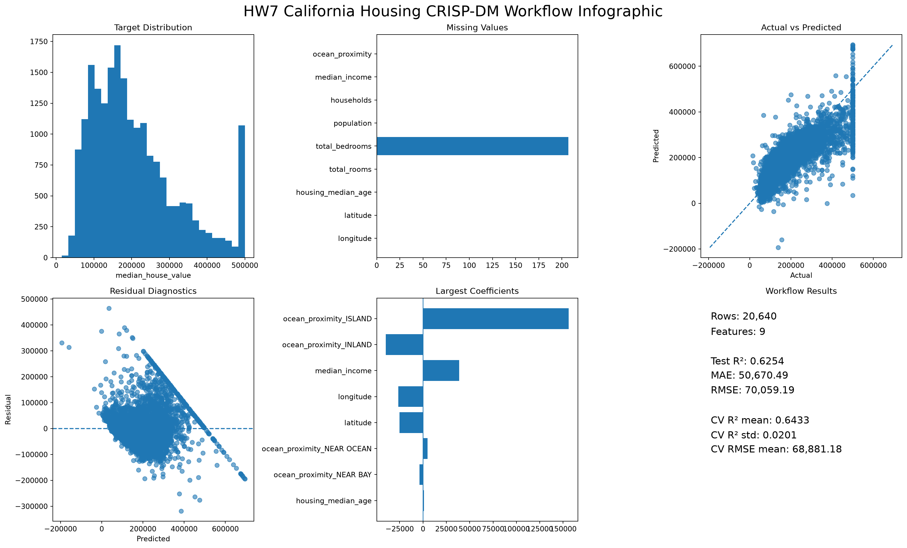
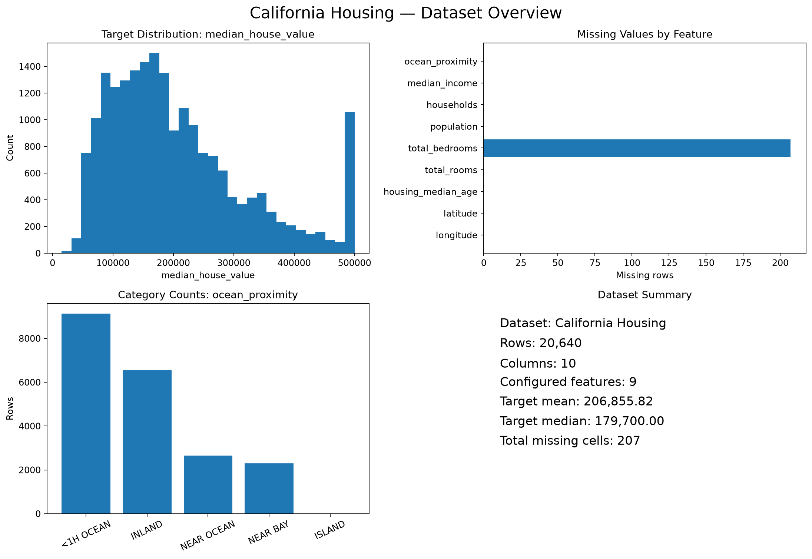
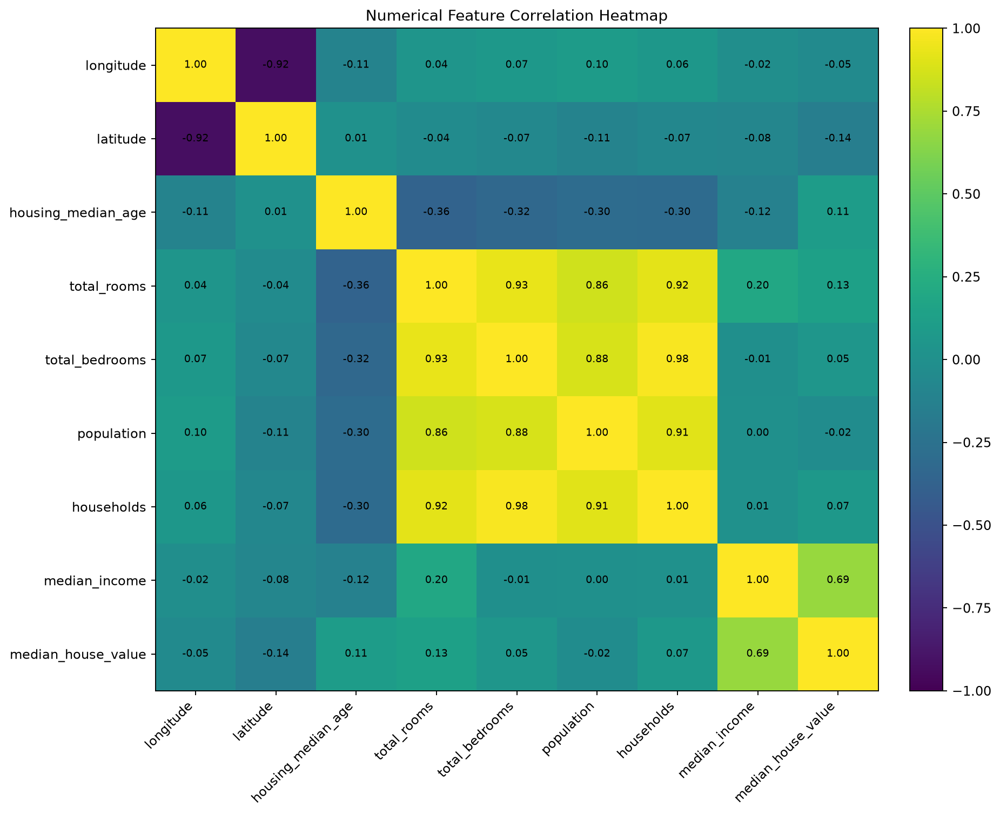
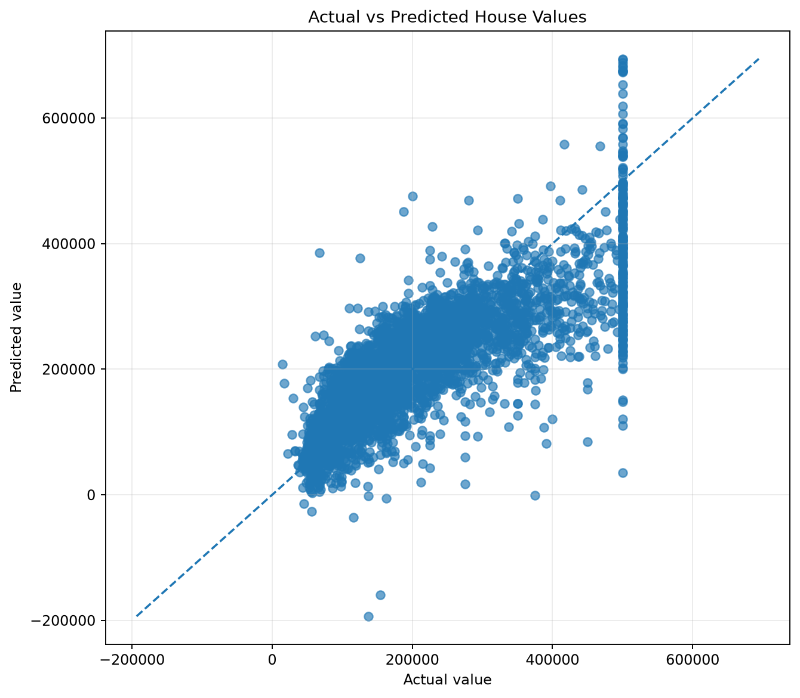
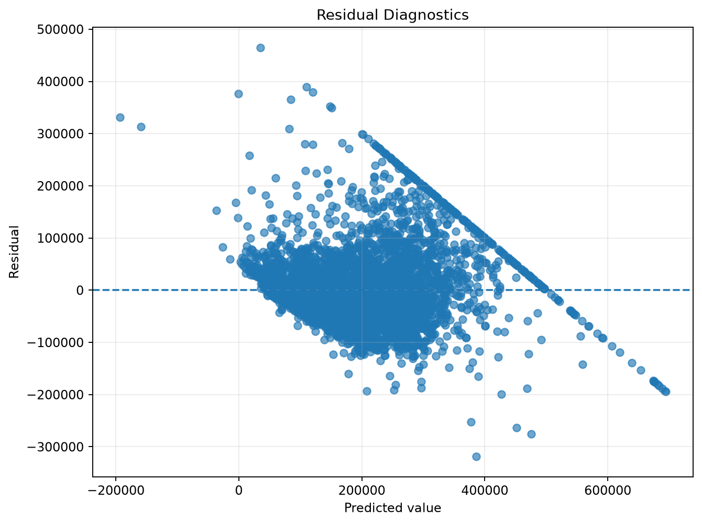
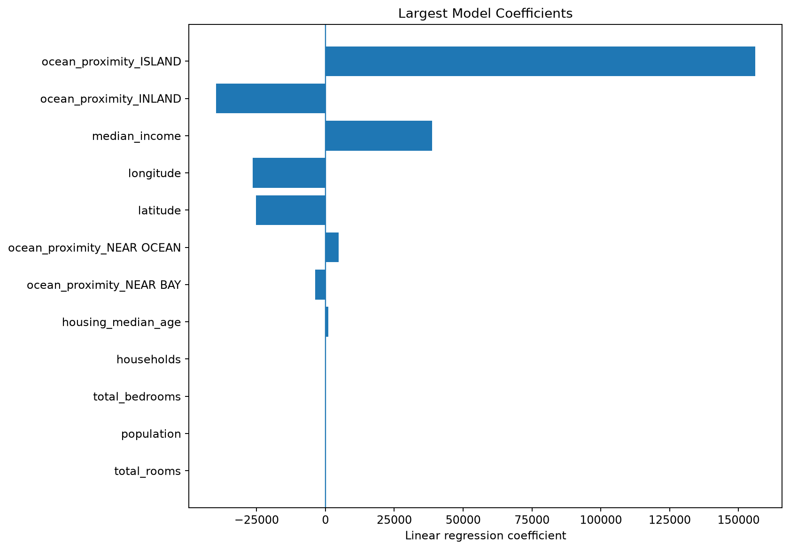

Completed & Verified
Workflow and Codex Skill status
Evidence
Model results
Workflow and Codex Skill
One analysis contract, two interfaces
CRISP-DM
One command, six stages
Gallery
Generated workflow artifacts






Documentation
Run, reuse, and verify the same workflow elsewhere.
The canonical workflow, Codex Skill, and verifier keep humans and automation aligned.